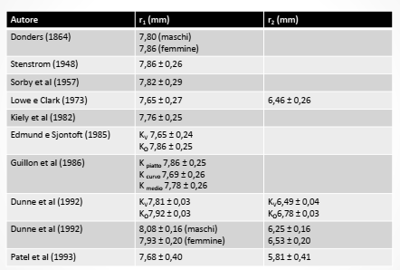
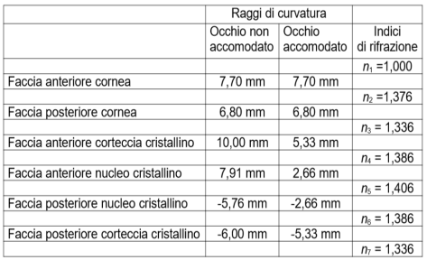
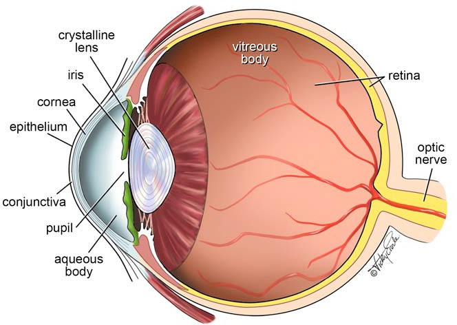

Obiettivi
- Distinguere formazione dell’immagine, conversione del segnale ed elaborazione visiva.
- Collegare coni e bastoncelli alle condizioni di illuminazione.
- Calcolare il potere di una superficie oculare usando .
- Spiegare perché la superficie posteriore della cornea può avere potere negativo.
- Distinguere indice fisico, indice cheratometrico e indice equivalente del cristallino.
Come diventa visione l’immagine retinica?
Livello intuitivo: L’immagine ottica è soltanto l’inizio. Le cellule della retina rispondono alla luce, i circuiti nervosi elaborano i segnali e il cervello li usa per riconoscere forme, movimenti e colori.
Per essere maggiormente rigorosi: La fototrasduzione converte l’assorbimento dei fotoni in variazioni dell’attività elettrica dei fotorecettori. Il segnale attraversa circuiti retinici e vie visive. L’attività delle cellule gangliari raggiunge il cervello attraverso il nervo ottico.
Coni, bastoncelli e binocularità
Livello intuitivo: I coni permettono di distinguere bene colori e dettagli con luce sufficiente. I bastoncelli sono molto sensibili nella penombra. I due occhi forniscono informazioni che possono aiutarci a percepire la profondità.
Per essere maggiormente rigorosi: Visione fotopica, scotopica e mesopica coinvolgono in modi diversi i due sistemi. La stereopsi usa disparità binoculari, ma non coincide con tutta la visione binoculare. Prospettiva, occlusione e movimento forniscono anche indizi monoculari di profondità.
Dati prima dei calcoli
Indici, raggi e spessori adottati
Livello intuitivo: Per calcolare quanto deviano la luce cornea e cristallino servono i materiali prima e dopo ogni superficie, le curvature e lo spessore. Un valore anatomico non è identico per tutti gli occhi.
| Mezzo | Indice utilizzato |
|---|---|
| Aria | |
| Cornea | |
| Umore acqueo | |
| Cristallino equivalente nell’esercizio | |
| Umore vitreo |
| Elemento | Raggio anteriore | Raggio posteriore | Spessore assiale |
|---|---|---|---|
| Cornea nell’esempio | , assunto per il calcolo | ||
| Cristallino nell’esercizio della presentazione |
Per essere maggiormente rigorosi: I raggi sono orientati lungo la luce. L’indice è equivalente: il cristallino reale ha un gradiente interno. I dati dell’esercizio e quelli delle tabelle storiche seguenti rappresentano modelli differenti e non devono essere mescolati.


Calcolo del potere corneale
Superficie anteriore
Livello intuitivo: Il grande salto di indice fra aria e cornea produce una forte convergenza.
Superficie posteriore
Livello intuitivo: Il potere è negativo perché l’indice diminuisce e il raggio è positivo. Questa superficie riduce parte della convergenza prodotta anteriormente.
Somma sottile e correzione dello spessore
Per essere maggiormente rigorosi: Il termine di spessore è negativo, quindi sottrarlo aumenta il potere equivalente rispetto alla semplice somma. Arrotondiamo solo alla fine: il risultato del modello è circa . Un indice cheratometrico convenzionale permette un’altra stima dalla sola superficie anteriore, ma non è l’indice fisico del tessuto.
Calcolo del potere del cristallino
Prima superficie
Seconda superficie
Livello intuitivo: Entrambe le superfici contribuiscono alla convergenza. Sul lato posteriore sono negativi sia il salto d’indice sia il raggio: il loro rapporto è positivo.
Potere sottile
Potere equivalente con spessore
Per essere maggiormente rigorosi: Questi calcoli usano i dati dell’esercizio della presentazione e correggono i suoi arrotondamenti intermedi incoerenti. Il risultato non è un valore universale del cristallino. Per descriverne il gradiente, l’accomodazione o un altro modello occorrono parametri differenti. Cornea e cristallino, separati da una distanza, non vanno infine sommati direttamente per ottenere il potere totale dell’occhio.
Il cristallino
Curvatura e gradiente d’indice
Livello intuitivo: Il cristallino devia la luce sia sulle superfici sia all’interno. Il suo materiale non ha esattamente lo stesso indice ovunque.
Per essere maggiormente rigorosi: Il cristallino è un mezzo a gradiente d’indice. Un indice equivalente riproduce alcune proprietà di un modello, senza descrivere ogni percorso interno. Nell’accomodazione cambiano forma e posizione delle superfici. Le variazioni del gradiente richiedono un modello specifico e non vanno ridotte a un unico indice che cambia allo stesso modo in tutto il cristallino.

Perché non sommare direttamente cornea e cristallino?
Livello intuitivo: Fra i due elementi la luce percorre una distanza e il fascio cambia. Il potere totale dipende quindi anche dalla loro separazione.
Per essere maggiormente rigorosi: Un sistema multisuperficie richiede superfici, indici e spessori coerenti. Il potere equivalente dell’occhio non è, in generale, la semplice somma dei poteri isolati di cornea e cristallino.